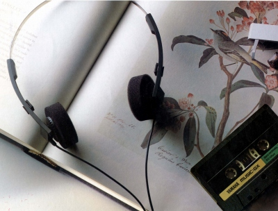

YHL-005

■価格 7,500円■型式 ダイナミック型オープンエアタイプ■振動板 25�o 12ミクロン ポリエステル膜■インピーダンス 45Ω■再生周波数帯域 20-20,000Hz■許容入力 100mW■感度 102ｄB/mW■コード 2.4ｍストレートコード■重量 50g（コード含まず）■発売 1981年■販売終了 1983〜84年頃■備考 3.5mmアダプター付属
ヤマハのインデックスへ